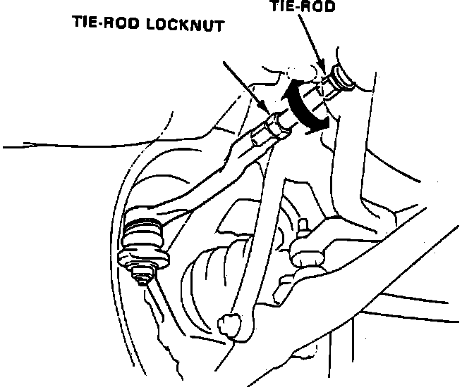

Toe-In
Ensure tires are properly inflated prior to checking or adjusting toe-in.Fig. 6 Front Toe-in Adjustment:

1. Raise front of vehicle and position turning radius gauges under front wheels, then lower vehicle.
2. Center steering wheel spokes and measure difference in toe measurements with wheels in the straight-ahead position.
3. If toe-in does not meet specifications, proceed as follows:
a. Loosen tie rod locknuts and turn both tie rods, Fig. 6, in the same direction until front wheels are in the straight-ahead position.
b. Turn both tie rods an equal amount until toe-in meets specifications, then tighten tie rod locknuts. Ensure tie rod boots are not deformed after adjustment.